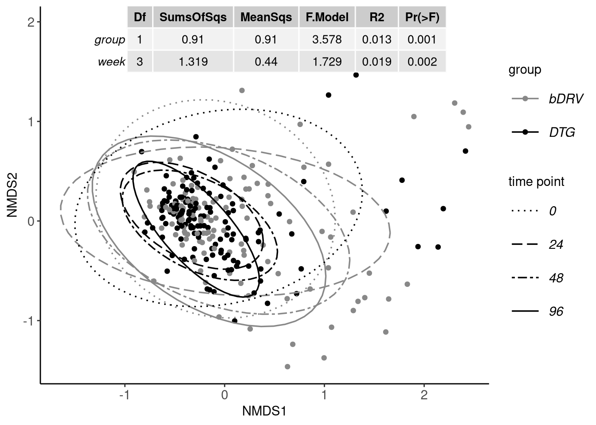
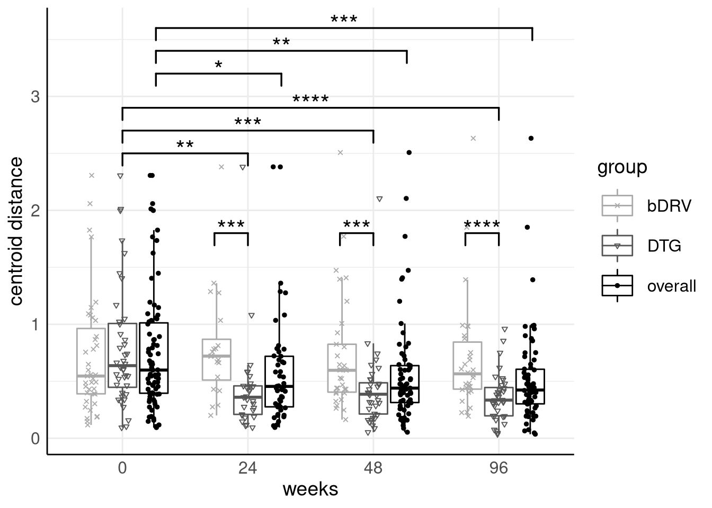
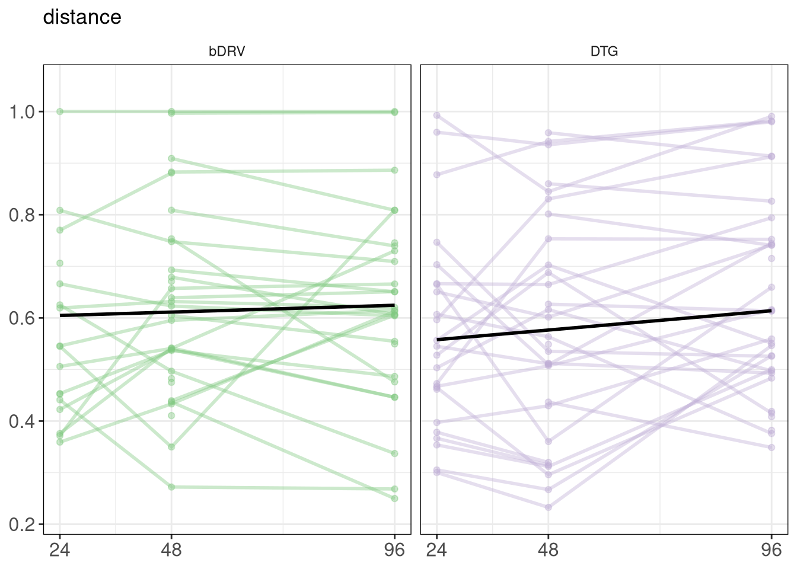

Beta Diversity and NMDS
Last updated: 2023-05-26
Checks: 6 1
Knit directory: advanz4/
This reproducible R Markdown analysis was created with workflowr (version 1.7.0). The Checks tab describes the reproducibility checks that were applied when the results were created. The Past versions tab lists the development history.
The R Markdown file has unstaged changes. To know which version of the R Markdown file created these results, you’ll want to first commit it to the Git repo. If you’re still working on the analysis, you can ignore this warning. When you’re finished, you can run wflow_publish to commit the R Markdown file and build the HTML.
Great job! The global environment was empty. Objects defined in the global environment can affect the analysis in your R Markdown file in unknown ways. For reproduciblity it’s best to always run the code in an empty environment.
The command set.seed(20211203) was run prior to running the code in the R Markdown file. Setting a seed ensures that any results that rely on randomness, e.g. subsampling or permutations, are reproducible.
Great job! Recording the operating system, R version, and package versions is critical for reproducibility.
Nice! There were no cached chunks for this analysis, so you can be confident that you successfully produced the results during this run.
Great job! Using relative paths to the files within your workflowr project makes it easier to run your code on other machines.
Great! You are using Git for version control. Tracking code development and connecting the code version to the results is critical for reproducibility.
The results in this page were generated with repository version 85710c1. See the Past versions tab to see a history of the changes made to the R Markdown and HTML files.
Note that you need to be careful to ensure that all relevant files for the analysis have been committed to Git prior to generating the results (you can use wflow_publish or wflow_git_commit). workflowr only checks the R Markdown file, but you know if there are other scripts or data files that it depends on. Below is the status of the Git repository when the results were generated:
Ignored files:
Ignored: .RData
Ignored: .Rhistory
Ignored: .Rproj.user/
Ignored: analysis/.Rhistory
Ignored: analysis/420_Taxonomy_DA_cache/
Ignored: analysis/505_Adenovirus_Analysis_cache/
Ignored: analysis/510_Function_DA_cache/
Ignored: data/mre.rds
Untracked files:
Untracked: analysis/figure/
Untracked: output/BMI_vs_GR.pdf
Untracked: output/figures/distance_to_centroids.svg
Unstaged changes:
Modified: analysis/311_GR_vs_BMI.Rmd
Modified: analysis/320_Beta_Diversity.Rmd
Modified: code/group_comparisons.R
Modified: output/mre_data/CatalogMapping/IGC/lmm/lmm_time_point_by_group.pdf
Note that any generated files, e.g. HTML, png, CSS, etc., are not included in this status report because it is ok for generated content to have uncommitted changes.
These are the previous versions of the repository in which changes were made to the R Markdown (analysis/320_Beta_Diversity.Rmd) and HTML (docs/320_Beta_Diversity.html) files. If you’ve configured a remote Git repository (see ?wflow_git_remote), click on the hyperlinks in the table below to view the files as they were in that past version.
| File | Version | Author | Date | Message |
|---|---|---|---|---|
| html | 72f1533 | cblazquez | 2023-04-18 | Updated website |
| Rmd | efdac31 | cblazquez-irsi | 2023-04-13 | Reestructured website |
| Rmd | ec0749d | cblazquez | 2023-03-13 | Added BMI tests for week 24 |
| html | ec0749d | cblazquez | 2023-03-13 | Added BMI tests for week 24 |
| Rmd | 160c5b6 | cblazquez-irsi | 2023-02-19 | updated data input |
| Rmd | 7434033 | cblazquez | 2023-02-07 | Added poster figures to Taxonomy DA script |
| Rmd | 57d7a9e | cblazquez | 2023-01-12 | Added ANOVA to NMDS plot |
| html | 57d7a9e | cblazquez | 2023-01-12 | Added ANOVA to NMDS plot |
| Rmd | 0ab01c5 | cblazquez | 2023-01-09 | corrected pairwise overall bray_curtis distances per timepoint |
| html | 0ab01c5 | cblazquez | 2023-01-09 | corrected pairwise overall bray_curtis distances per timepoint |
| html | c1a9770 | cblazquez | 2023-01-09 | updated website and CMV |
| Rmd | a0f19e2 | cblazquez | 2022-11-25 | moved files to code |
| html | a0f19e2 | cblazquez | 2022-11-25 | moved files to code |
| Rmd | e660a28 | cblazquez-irsi | 2022-10-27 | updates on various scripts |
| html | e660a28 | cblazquez-irsi | 2022-10-27 | updates on various scripts |
| Rmd | 19b15b8 | cblazquez-irsi | 2022-10-14 | Added Functional DA |
| html | 19b15b8 | cblazquez-irsi | 2022-10-14 | Added Functional DA |
| Rmd | c208fe4 | cblazquez-irsi | 2022-09-16 | created basic report Rmd |
| html | c208fe4 | cblazquez-irsi | 2022-09-16 | created basic report Rmd |
| Rmd | df7195b | cblazquez-irsi | 2022-09-14 | Updated beta_diversity.Rmd |
| html | 0aa7922 | cblazquez | 2022-06-07 | Improved S.parasanguinis interaction plots with inflammation markers |
| Rmd | 3fa20ba | cblazquez | 2022-06-02 | Added species v inflammation |
| html | 3fa20ba | cblazquez | 2022-06-02 | Added species v inflammation |
| html | 1743951 | cblazquez | 2022-05-30 | Specific analysis for S.parasanguinis |
| Rmd | 2a1fe84 | cblazquez | 2022-04-28 | Fixed rmd integration to wflow_build() |
| html | 2a1fe84 | cblazquez | 2022-04-28 | Fixed rmd integration to wflow_build() |
| Rmd | 93ba24c | cblazquez | 2022-04-05 | added delta CD4/CD8 density plot to 335_BLMicrobiome.RMd |
| Rmd | 7d67e12 | cblazquez-irsi | 2022-03-29 | Fixed commented bugs |
| html | 7d67e12 | cblazquez-irsi | 2022-03-29 | Fixed commented bugs |
| Rmd | eba3a18 | Marc Noguera-Julian | 2022-03-29 | comments for Carlos |
| Rmd | e253850 | cblazquez | 2022-03-29 | worked on NMDS |
| html | e253850 | cblazquez | 2022-03-29 | worked on NMDS |
| Rmd | c51687a | cblazquez | 2022-03-28 | fixed workflowrs and gene richness issues |
| html | c51687a | cblazquez | 2022-03-28 | fixed workflowrs and gene richness issues |
| Rmd | 11c1e7d | cblazquez | 2022-03-28 | Code reorganized towards new structure |
R Markdown
This is an R Markdown document. Markdown is a simple formatting syntax for authoring HTML, PDF, and MS Word documents. For more details on using R Markdown see http://rmarkdown.rstudio.com.
When you click the Knit button a document will be generated that includes both content as well as the output of any embedded R code chunks within the document. You can embed an R code chunk like this:
suggested package selbal ✔suggested package DataExplorer ✔suggested package lme4 ✔suggested package merTools ✔Including Plots
You can also embed plots, for example:
mymre <- here::here("data", "filt_mre.rds") %>%
readRDS()
metadata <-
here::here("Metadata") %>%
list.files(pattern = "clean_metadata", full.names = T) %>%
file.info() %>%
dplyr::arrange(desc(ctime)) %>%
rownames() %>%
dplyr::first() %>%
read.csv()
cat_df <-
here::here("Metadata", "CategoricalVariables.txt") %>%
read.delim(., header = T)
cat_vector <- cat_df %>%
pull(CategoricalVariable)
long_var <- here::here("Metadata", "LongitudinalVariables.txt") %>%
read.delim(., header = T) %>%
pull(LongitudinalVariable)
id_var <- here::here("Metadata", "LongitudinalVariables.txt") %>%
read.delim(., header = T) %>%
pull(LinkVariable)
num_var <- here::here("Metadata", "NumericalVariables.txt") %>%
read.delim(., header = T) %>%
pull(NumericalVariable)#### This chunk is for updating the mre internally as new variables come out. Once the final mre is done this chunk will be removed.
devtools::load_all("../WMGSPipeline")
mymre@taxa@virgo <- SpquantSet()
mymre@gene_function@humann <- metar::GeneFunSet()
mymre@taxa@metaphlan@phyloseq_sec
mymre <- filter_samples(mre = mymre, sample_ids = metadata$SampleID)
mymre@metadata@metadata_df <- tibble(metadata)
mymre@taxa@metaphlan@phyloseq@sam_data <- metadata %>%
phyloseq::sample_data(.)
#
# mymre@taxa@metaphlan@phyloseq_sec@sam_data <- metadata %>%
# phyloseq::sample_data(.)
mymre@metadata@categorical_vals <- here::here("Metadata", "CategoricalVariables.txt") %>%
read.delim(., header = T) %>%
tibble()
mymre@metadata@numeric_vals <- here::here("Metadata", "NumericalVariables.txt") %>%
read.delim(., header = T) %>%
tibble()
mymre@metadata@longitudinal_vals <- here::here("Metadata", "LongitudinalVariables.txt") %>%
read.delim(., header = T) %>%
tibble()phy <- get_phyloseq(mymre, type = "metaphlan")
getAbundances<-function(phyloseq, level){
collapsedPhyloseq<- phyloseq::tax_glom(phyloseq, level)
OtuTable<- phyloseq::otu_table(collapsedPhyloseq) %>%
magrittr::set_rownames(as.character(phyloseq::tax_table(collapsedPhyloseq)[,level])) %>%
as.data.frame()
return(OtuTable)
}
myAbundanceDF<- getAbundances(phy, "Species")
myNMDS <- myAbundanceDF %>%
t() %>%
as.data.frame() %>%
# vegan::vegdist(., method = "bray") %>%
metaMDS(.,trymax=800, distance = "bray",
k = 2)
NMDS_coords <-
myNMDS %>%
pluck("points") %>%
as.data.frame()
# NMDS = data.frame(NMDS1 = dim_NMDS$points[,1], NMDS2 = dim_NMDS$points[,2])
BiPlotCoords<- envfit(myNMDS, t(myAbundanceDF), perm=999)
BiPlotCoordsDF <- c("NMDS1","NMDS2","r","pvals") %>%
set_names() %>%
map_dfr(., ~ {
if(.x %in% c("NMDS1","NMDS2")){
BiPlotCoords$vectors$arrows[,.x] %>%
as.numeric()
} else{
BiPlotCoords$vectors %>%
pluck(.x) %>%
as.numeric()
}
}) %>%
as.data.frame() %>%
set_names(nm=c("NMDS1","NMDS2","r","p")) %>%
dplyr::mutate(Dim1 = NMDS1*sqrt(r),
Dim2 = NMDS2*sqrt(r),
species = rownames(myAbundanceDF))
myBrayDistMat <-vegdist(wisconsin(sqrt(t(myAbundanceDF))))NMDS by Treatment group
One of the variables: CD4diff_96 has only one level. That means all patients in the study had an increase of CD4 counts higher than 50 cells/ml between weeks 96 and 0. As this variable only has one level it will cause the following code to break (as it performs conrast analysis). Hence, it will be removed from the following analysis. However, we’ll look at the distribution of the CD4 increases as a distribution:
metadata %>%
dplyr::filter(time_point %in% c(0,48),
!is.na(CD4diff_96)) %>%
dplyr::select(record_id, time_point, CD4) %>%
dplyr::group_by(record_id) %>%
dplyr::summarise(dif = diff(CD4)) %>%
ggplot(., aes(x= dif)) +
geom_density()
cat_df <- cat_df %>%
filter(!CategoricalVariable == "CD4diff_96")
cat_var <- "group"
link_var <- "record_id"
id_var <- "SampleID"
myPal<-RColorBrewer::brewer.pal(name = cat_df$PaletteName[1],
n=length(unique(metadata[,cat_var])))
BiPlotCoordsDF<-BiPlotCoordsDF %>%
mutate(Dim1s = Dim1*3,
Dim2s = Dim2*3)
myNMDS_DF <- NMDS_coords %>%
rownames_to_column(var = id_var) %>%
dplyr::full_join(., metadata, by =id_var) %>%
dplyr::select(SampleID = id_var,
NMDS1 = MDS1,
NMDS2 = MDS2,
link_var = !!sym(link_var),
cat_var = !!sym(cat_var),
long_var = long_var)
myAdonis<- adonis(myBrayDistMat~ cat_var, data = myNMDS_DF) %>%
pluck("aov.tab") %>%
as.data.frame() %>%
slice(1L) %>%
magrittr::set_rownames(cat_var)
myNMDSplot<-ggplot(myNMDS_DF, aes(x=NMDS1, y=NMDS2)) +
geom_point(aes(color=cat_var)) +
theme_bw()+
theme(panel.border=element_blank(),
panel.grid.major=element_blank(),
panel.grid.minor=element_blank(),
axis.line=element_line(colour="black"),
axis.text.x=element_text(size=11),
axis.text.y=element_text(size=11),
axis.title.x=element_text(size=11),
axis.title.y=element_text(size=11),
legend.text=element_text(size=11,face="italic"),
legend.title=element_text(size=11))+
stat_ellipse(geom="polygon",alpha=0.15,color="black",aes(fill=cat_var),level=0.95)+
# ggtitle(expression(atop("Species composition",atop(italic("all samples"))))) +
theme(plot.title=element_text(lineheight=1,face="bold",size=13))+
coord_fixed()+
labs(fill = cat_var, color=cat_var, shape = long_var) +
scale_color_brewer(palette = "Accent") +
scale_fill_brewer(palette = "Accent") + annotation_custom(gridExtra::tableGrob(round(myAdonis,3),
theme = ttheme_default(base_size = 10)),ymin = 1.9)
myNMDSBiplot<-ggplot(myNMDS_DF, aes(x=NMDS1, y=NMDS2)) +
geom_point(aes(colour=cat_var, shape = as.character(long_var))) +
scale_colour_manual(values = myPal, labels = c("DGT", "DRV/r")) +
scale_fill_manual(values=myPal, labels = c("DGT", "DRV/r"))+
theme_bw()+
theme(panel.border=element_blank(),
panel.grid.major=element_blank(),
panel.grid.minor=element_blank(),
axis.line=element_line(colour="black"),
axis.text.x=element_text(size=11),
axis.text.y=element_text(size=11),
axis.title.x=element_text(size=11),
axis.title.y=element_text(size=11),
legend.text=element_text(size=11,face="italic"),
legend.title=element_text(size=11))+
ggtitle(expression(atop("Species composition",atop(italic("all samples"))))) +
theme(plot.title=element_text(lineheight=1,face="bold",size=13))+
stat_ellipse(geom="polygon",
alpha=0.15,color="black",
aes(fill=cat_var),level=0.95)+
# scale_size_manual(values = c(1:length(unique(myNMDS_DF[,"long_var"])))/1.5) +
geom_segment(data=BiPlotCoordsDF,aes(x=0,xend=Dim1s,y=0,yend=Dim2s),
arrow = arrow(length = unit(0.2,"cm")),colour="darkgrey")+
geom_text_repel(data=BiPlotCoordsDF,aes(Dim1s,Dim2s,label=species),
size=2.5, box.padding = unit(0.25, "lines"),
segment.colour="black",
segment.alpha=0.5,
segment.size=0.10)+
coord_fixed()+
labs(fill = cat_var, color=cat_var, shape = long_var) +
annotation_custom(gridExtra::tableGrob(round(myAdonis,3),
theme = ttheme_default(base_size = 8)),ymin = 3.5, xmin=2.4)
myNMDSplot 
myNMDSplot
When we look at the most simple ordination before colouring by categorical variables, we see no clear separated clusters between samples. They all appear to be mostly concentrated in one big cluster that randomly spreads in the positive direction for both NMDS components.
In a more formal analysis, the silhouette coefficient was tested for different number of clusters. This analysis found the biggest coefficient was found for n=1 clustrs, with massive drops between 2-3 and 5-6.
myBrayDistMat <- phyloseq::otu_table(phy) %>%
t() %>%
sqrt() %>%
vegan::wisconsin() %>%
vegan::vegdist()
c(1:11) %>%
set_names() %>%
map_df(., ~{
cluster::pam(myBrayDistMat, k = .x) %>%
pluck("silinfo") %>%
pluck("avg.width")
}) %>%
t() %>%
as_data_frame() %>%
rownames_to_column(var="clusters") %>%
set_names(c("clusters", "coefficient")) %>%
ggplot(., aes(x=as.numeric(clusters), y=coefficient, group=1)) +
geom_point() +
geom_line() +
scale_x_continuous(breaks=c(1:10)) +
theme_bw() +
theme(panel.grid.minor = element_blank()) +
labs(title = "Silhouette coefficient by number of clusters",
x="nº Clusters", y = "Silhouette coefficient")
In the same fashion, when we start identifying samples by group and Timepoint, we see no clear separation, although samples from group 1 (+DGT) group appear to be more clustered together than group 2 (DRV+RLT), which show a more diffuse “central” cluster and are more dispersed. When looking at weight of the variables, the concentric spread of the arrows can be split in two sides, one more enriched in Prevotella and another in bacteroides, which spread mostly around the 2nd component of the NMDS.
However, the Adonis test found the variable group to have a significant effect over sample distances (p<0.001), although it only accounted for a small portion of the variance
myNMDSBiplotLongitudinal dispersion
We’ve seen that time point is the most significant variable in what comes to distance variance. It has been hypothesized that healthy human microbiomes tend to be somewhat similar, and when they become dysbiotic, they don’t really change in a specific way, but each one does differently, kind of like “escaping from the healthy state”. We’ll call this the Anna Karenina principle, and we are going to check if this is happening in our cohort. As the immune system gets reconstituted, the gut microbiome should come from being scattered all over the ordination to get closer per group. We’ll test this by calculating the distance of each sample to its NMDS group centroid. We’ll do this by calculating the euclidean distance between each sample and the group centroid using the NMDS coordinates. This should not be really problematic as the NDS coordinates are already projected in a 2D space and hence the space should be euclidean.
The formula for the euclidean distance is the following: \[\sqrt{(x_c - x_s)² + (y_c -y_s)²}\]
centroids <-
myNMDS_DF %>%
dplyr::mutate(long_cat = paste(cat_var, long_var, sep = "_")) %>%
envfit(myNMDS ~ cat_var * long_cat, ., perm = 999) %>%
purrr::pluck("factors","centroids") %>%
as.data.frame() %>%
tibble::rownames_to_column(var = "long_cat") %>%
dplyr::mutate(long_var = str_extract(long_cat, "[0-9]+"),
cat_var = str_extract(long_cat, "(bDRV|DTG)(?=_)")) %>%
dplyr::filter(!is.na(long_var), !is.na(cat_var))
NMDS_DF_c <-
myNMDS_DF %>%
dplyr::mutate(long_var = as.character(long_var)) %>%
dplyr::right_join(centroids, by = c("cat_var", "long_var"), suffix = c("","_c")) %>%
dplyr::mutate(centroid_dist = sqrt((NMDS1_c-NMDS1)^2 + (NMDS2_c-NMDS2)^2)) %>%
select(-long_cat) %>% arrange(cat_var, long_var)
centroid_test_group <-
NMDS_DF_c %>%
dplyr::mutate(cat_var = "overall") %>%
rbind(NMDS_DF_c) %>%
group_by(long_var) %>%
rstatix::wilcox_test(centroid_dist ~ cat_var) %>%
rstatix::add_significance("p") %>%
rstatix::add_xy_position(x = "long_var", group= "cat_var") %>%
dplyr::filter(!group1 == "overall",
!group2 == "overall")
centroid_test_long_oa <-
NMDS_DF_c %>%
PairedWilcox_withNAs(., Variable = "centroid_dist", Response = "long_var",Subsets = NULL,IDs = "link_var" ) %>%
dplyr::mutate(cat_var = "overall", .before = 1) %>%
# rstatix::wilcox_test(centroid_dist ~ cat_var, paired = T) %>%
rstatix::add_significance("p")
centroid_test_long_group <-
NMDS_DF_c %>%
dplyr::mutate(cat_var = "overall") %>%
rbind(NMDS_DF_c) %>%
arrange(link_var, long_var) %>%
# get_group_comparisons(., link_var = "link_var", long_var = "long_var", cat_vector = "cat_var",num_vector = "centroid_dist",comps = c(0,24,48,96), graph_coords = T,type = "longitudinal")
PairedWilcox_withNAs(., Variable = "centroid_dist", Response = "long_var",Subsets = "cat_var",IDs = "link_var" ) %>%
dplyr::group_by(cat_var) %>%
rstatix::add_x_position(x = "long_var", group = "cat_var") %>%
rstatix::add_significance("p") %>%
ungroup() %>%
arrange(cat_var, long_var)
# dplyr::filter(!p.signif == "ns")
# rbind(centroid_test_long_oa) %>%
# rstatix::add_x_position(x = "long_var", group= c("cat_var"))
#
cent_dist_plt <-
NMDS_DF_c %>%
dplyr::mutate(long_var = as.factor(long_var),
cat_var = "overall") %>%
rbind(NMDS_DF_c,.) %>%
ggplot(aes(x = long_var, y = centroid_dist)) +
geom_boxplot(aes(color = cat_var), outlier.alpha = 0) +
geom_jitter(aes(color = cat_var, group = cat_var, shape = cat_var), size = 1,
position = position_jitterdodge(jitter.width = .1)) +
stat_pvalue_manual(data = centroid_test_group, label = "p.signif", hide.ns = T,
y = 1.8, bracket.size = .6, size = 6) +
stat_pvalue_manual(data = centroid_test_long_group, label = "p.signif",
hide.ns = T,
y = c(2.5,2.7,2.9,3.2,3.4,3.6), bracket.size = .6, size = 6) +
theme_minimal() +
labs(x = "weeks", y = "centroid distance", color = "group", shape = "group") +
scale_shape_manual(values = c(4,6,19), limits = c("bDRV", "DTG", "overall")) +
scale_color_manual(values = c("#AAAAAA", "#555555", "#000000"), limits = c("bDRV", "DTG", "overall")) +
theme(axis.line = element_line(colour = "black", size = .5),
axis.text = element_text(size = 12),
axis.title = element_text(size = 14),
legend.title = element_text(size = 14),
legend.text = element_text(size = 12),
legend.key.size = unit(1, "cm"))
cent_dist_plt
ggsave(cent_dist_plt, filename = here::here("output", "figures", "distance_to_centroids.svg"), device = "svg", width = 20, height = 18, units = "cm")Those are interesting results. At week 0, all groups seem to be all over the place and none appear to be better clustered than others. However at week 24, the DTG group becomes more closer together, which is not observed in the DRV group. This may be suggesting the DTG group is entering a “healthy stable” state.
Distances to basal
phy <- get_phyloseq(mymre, type = "metaphlan")
otu_df <-
phyloseq::otu_table(phy) %>%
t() %>%
as.data.frame() %>%
stats::setNames(phyloseq::tax_table(phy)[,"Species"]) %>%
# tibble::rownames_to_column("SampleID") %>%
stats::setNames(.,stringr::str_remove_all(colnames(.), "\\[")) %>%
stats::setNames(.,stringr::str_remove_all(colnames(.), "\\]"))
lmms <-
otu_df %>%
vegan::vegdist(x = ., method = "bray") %>%
distance_from_basal(dist_mat = ., metadata = metadata,
link_var = "record_id",
long_var = "time_point",
cat_var = "group",
basal = 0)
lab <- lmms %>%
pluck("stat") %>%
names() %>%
set_names() %>%
map_dfr(~ {
lmms %>%
purrr::pluck("stat",.x) %>%
as.data.frame() %>%
dplyr::select(Value, pval = `p-value`) %>%
dplyr::slice(2L) %>%
round(3) %>%
dplyr::mutate(group =.x)
})
plot <-
lmms %>%
pluck("plot")+
scale_x_continuous(breaks = unique(metadata$time_point)) +
scale_color_brewer(palette = "Accent") +
scale_fill_brewer(palette = "Accent")
plot
lab Value pval group
time_point...1 0.000 0.535 bDRV
time_point...2 0.001 0.057 DTGSample A0023 apparently jups to distance = 1 from the very start
Pairwise distances evolution
It has been suggested the human microbiome follows the “Anna Karenina” principle which states: “All happy families are alike; each unhappy family is unhappy in its own way.”. In microbiome it translates to healthy patients having somewhat similar microbiomes and when the immune system breaks down, the microbiome escapes a stable configuration and changes without any specific directin. Hence, in this setting, pairwise distances at basal should be higher and decrease as the immune system recomposes and the microbimes move towards a “healthy” composition which is more constant among patients.
samplenames <- myBrayDistMat %>% as.matrix ()%>% rownames()
centroids <-
vegan::betadisper(d = myBrayDistMat,
group = metadata %>%
arrange(factor(SampleID, levels = rownames(as.matrix(myBrayDistMat)))) %>%
pull(group),
type = "centroid") %>% plot()
dplyr::rename(SampleID = Item)
upper_distmat <- as.matrix(myBrayDistMat)
upper_distmat[lower.tri(upper_distmat)] <- NA
sample_vc <- metadata$time_point
names(sample_vc) <- metadata$SampleID
distance_df <-
upper_distmat %>%
as.matrix() %>%
as.data.frame() %>%
# dplyr::filter(!rownames(.)==colnames(.)) %>%
rownames_to_column("Sample1") %>%
pivot_longer(cols = !Sample1, names_to = "Sample2", values_to = "dist") %>%
mutate(tp1 = sample_vc[Sample1],
tp2 = sample_vc[Sample2]) %>%
dplyr::filter(Sample1 != Sample2,
tp1 == tp2)
distance_df %>%
# sample_n_by(cmv, size = 406) %>%
ggstatsplot::ggbetweenstats(.,
x = "tp1",
y = "dist",
type = "np") +
labs(y = "pairwise within-group distances",
x = "week")Looks like the hypotesis holds. Beta diversity drastically decreases from baseline to week 24 (medians 074 vs 0.66) and becomes somewhat consistent afterwards, decreasing very slowly as it only becomes relevant after 96 weeks. This suggests the microbiome makes ost of the recovery quickly after which it stabilizes, changling very slowly, if at all.
first_dif <-
otu_df %>%
vegan::vegdist(x = ., method = "bray") %>%
distance_from_basal(dist_mat = ., metadata = metadata,
link_var = "record_id",
long_var = "time_point",
cat_var = "group", basal= 0) %>%
pluck("data")
test_cat <-
first_dif %>%
dplyr::group_by(time_point) %>%
rstatix::wilcox_test(distance ~ group, p.adjust.method = "BH") %>%
# rstatix::adjust_pvalue(p.col = "p", method = "none") %>%
rstatix::add_significance(p.col = "p", output.col = "p.adj.signif") %>%
rstatix::add_xy_position("time_point") %>%
dplyr::mutate(y.position = y.position + 0.2)
test_long <-
first_dif %>%
PairedWilcox_withNAs(
myDF = .,
IDs = "record_id",
Variable = "distance",
Response = "time_point",
Subsets = "group"
) %>%
group_by(group) %>%
rstatix::adjust_pvalue(p.col = "p",
output.col = "p.adj",
method = "BH") %>%
ungroup() %>%
# rstatix::adjust_pvalue(method = "BH") %>%
add_significance(p.col = "p.adj") %>%
# mutate(CategoricalVariable = levels(as.factor(myInnerDataFrame$CategoricalVariable))) %>%
# add_y_position(y.trans = function(x){quantile(x, probs=c(.1))}) %>%
mutate(
xmin = recode(
group1,
`24` = 1,
`48` = 2
),
xmax = recode(
group2,
`24` = 1,
`48` = 2,
`96` = 3
)
) %>%
mutate(xmin = case_when(group == "DTG" ~ xmin + 0.2,
group == "DRV/r" ~ xmin - 0.2),
xmax = case_when(group == "DTG" ~ xmax + 0.2,
group == "DRV/r" ~ xmax - 0.2))
boxplots <-
ggplot(first_dif, aes(x = as.factor(time_point), y = distance)) +
geom_boxplot(position = "dodge")+
scale_color_brewer(palette = "Set1") +
scale_fill_brewer(palette = "Set1") +
stat_pvalue_manual(test_cat, label = "p.adj.signif", step.increase = .01, hide.ns = T) +
stat_pvalue_manual(test_long, label = "p.adj.signif", step.increase = .02, hide.ns = T) +
theme_bw() +
labs(x = "Weeks", y = "distance from basal") +
scale_fill_brewer(palette = "Accent")
lmms$plot
$stat
$stat$bDRV
Value Std.Error DF t-value p-value
(Intercept) 0.5980993744 0.0393795332 39 15.1880768 5.755095e-18
time_point 0.0002750861 0.0004398721 39 0.6253774 5.353659e-01
$stat$DTG
Value Std.Error DF t-value p-value
(Intercept) 0.539108962 0.0392280064 48 13.742961 2.935238e-18
time_point 0.000779198 0.0003995679 48 1.950102 5.701742e-02
$data
# A tibble: 159 × 6
SampleID basal_id record_id time_point group distance
<chr> <chr> <chr> <int> <chr> <dbl>
1 ADZ4_15 ADZ4_1 A001 24 DTG 0.878
2 ADZ4_36 ADZ4_1 A001 48 DTG 0.942
3 ADZ4_93 ADZ4_1 A001 96 DTG 0.982
4 ADZ4_22 ADZ4_2 A002 24 bDRV 0.808
5 ADZ4_45 ADZ4_2 A002 48 bDRV 0.748
6 ADZ4_118 ADZ4_2 A002 96 bDRV 0.709
7 ADZ4_26 ADZ4_9 A006 24 DTG 0.378
8 ADZ4_52 ADZ4_9 A006 48 DTG 0.320
9 ADZ4_34 ADZ4_13 A008 24 DTG 0.960
10 ADZ4_61 ADZ4_13 A008 48 DTG 0.936
# … with 149 more rowsboxplots
sessionInfo()R version 4.0.5 (2021-03-31)
Platform: x86_64-redhat-linux-gnu (64-bit)
Running under: Fedora 34 (Workstation Edition)
Matrix products: default
BLAS/LAPACK: /usr/lib64/libflexiblas.so.3.1
locale:
[1] LC_CTYPE=en_US.UTF-8 LC_NUMERIC=C
[3] LC_TIME=en_US.UTF-8 LC_COLLATE=en_US.UTF-8
[5] LC_MONETARY=en_US.UTF-8 LC_MESSAGES=en_US.UTF-8
[7] LC_PAPER=en_US.UTF-8 LC_NAME=C
[9] LC_ADDRESS=C LC_TELEPHONE=C
[11] LC_MEASUREMENT=en_US.UTF-8 LC_IDENTIFICATION=C
attached base packages:
[1] stats graphics grDevices utils datasets methods base
other attached packages:
[1] nlme_3.1-158 RColorBrewer_1.1-3 rstatix_0.7.0 ggpubr_0.4.0
[5] gridExtra_2.3 cluster_2.1.3 ggrepel_0.9.1 vegan_2.6-2
[9] lattice_0.20-45 permute_0.9-7 forcats_0.5.1 stringr_1.4.0
[13] dplyr_1.0.9 purrr_0.3.4 readr_2.1.2 tidyr_1.2.0
[17] tibble_3.1.7 ggplot2_3.3.6 tidyverse_1.3.1 phyloseq_1.34.0
[21] metar_0.1.5 devtools_2.4.3 usethis_2.1.6 workflowr_1.7.0
loaded via a namespace (and not attached):
[1] readxl_1.4.0 backports_1.4.1 blme_1.0-5
[4] systemfonts_1.0.4 plyr_1.8.7 igraph_1.3.2
[7] splines_4.0.5 listenv_0.8.0 digest_0.6.29
[10] foreach_1.5.2 htmltools_0.5.2 fansi_1.0.3
[13] magrittr_2.0.3 memoise_2.0.1 tzdb_0.3.0
[16] remotes_2.4.2 globals_0.15.0 Biostrings_2.58.0
[19] modelr_0.1.8 svglite_2.1.0 prettyunits_1.1.1
[22] colorspace_2.0-3 rvest_1.0.2 haven_2.5.0
[25] xfun_0.31 callr_3.7.0 crayon_1.5.1
[28] jsonlite_1.8.0 lme4_1.1-29 survival_3.3-1
[31] iterators_1.0.14 ape_5.6-2 glue_1.6.2
[34] gtable_0.3.0 zlibbioc_1.36.0 XVector_0.30.0
[37] car_3.1-0 pkgbuild_1.3.1 Rhdf5lib_1.12.1
[40] BiocGenerics_0.36.1 abind_1.4-5 scales_1.2.0
[43] mvtnorm_1.1-3 DBI_1.1.3 Rcpp_1.0.8.3
[46] xtable_1.8-4 merTools_0.5.2 stats4_4.0.5
[49] htmlwidgets_1.5.4 httr_1.4.2 ellipsis_0.3.2
[52] farver_2.1.0 DataExplorer_0.8.2 pkgconfig_2.0.3
[55] sass_0.4.1 dbplyr_2.2.0 here_1.0.1
[58] utf8_1.2.2 labeling_0.4.2 tidyselect_1.1.2
[61] rlang_1.0.2 reshape2_1.4.4 later_1.3.0
[64] cellranger_1.1.0 munsell_0.5.0 tools_4.0.5
[67] cachem_1.0.6 cli_3.3.0 generics_0.1.2
[70] selbal_0.1.0 ade4_1.7-19 broom_0.8.0
[73] evaluate_0.15 biomformat_1.18.0 fastmap_1.1.0
[76] arm_1.12-2 yaml_2.3.5 processx_3.6.1
[79] knitr_1.39 fs_1.5.2 future_1.26.1
[82] whisker_0.4 mime_0.12 xml2_1.3.2
[85] brio_1.1.3 compiler_4.0.5 rstudioapi_0.13
[88] ggsignif_0.6.3.9000 testthat_3.1.4 reprex_2.0.1
[91] bslib_0.3.1 stringi_1.7.6 highr_0.9
[94] ps_1.7.1 desc_1.4.1 logger_0.2.2
[97] Matrix_1.4-1 nloptr_2.0.3 multtest_2.46.0
[100] vctrs_0.4.1 pillar_1.7.0 lifecycle_1.0.1
[103] networkD3_0.4 rhdf5filters_1.2.1 furrr_0.3.0
[106] jquerylib_0.1.4 data.table_1.14.2 httpuv_1.6.5
[109] R6_2.5.1 promises_1.2.0.1 IRanges_2.24.1
[112] parallelly_1.32.0 sessioninfo_1.2.2 codetools_0.2-18
[115] boot_1.3-28 MASS_7.3-57 assertthat_0.2.1
[118] pkgload_1.2.4 rhdf5_2.34.0 rprojroot_2.0.3
[121] withr_2.5.0 S4Vectors_0.28.1 broom.mixed_0.2.9.4
[124] mgcv_1.8-40 parallel_4.0.5 hms_1.1.1
[127] grid_4.0.5 coda_0.19-4 minqa_1.2.4
[130] rmarkdown_2.14 carData_3.0-5 git2r_0.30.1
[133] getPass_0.2-2 Biobase_2.50.0 shiny_1.7.1
[136] lubridate_1.8.0